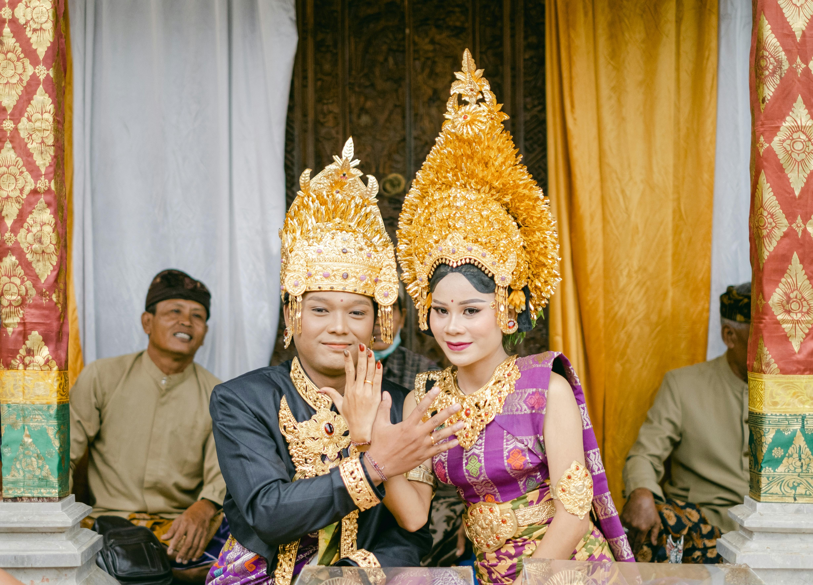
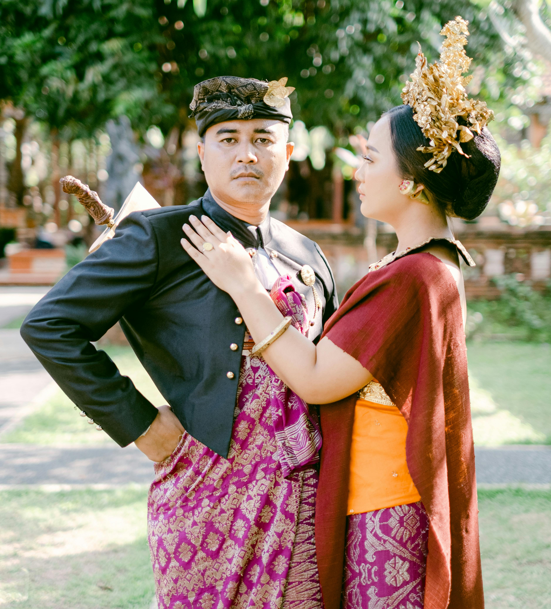
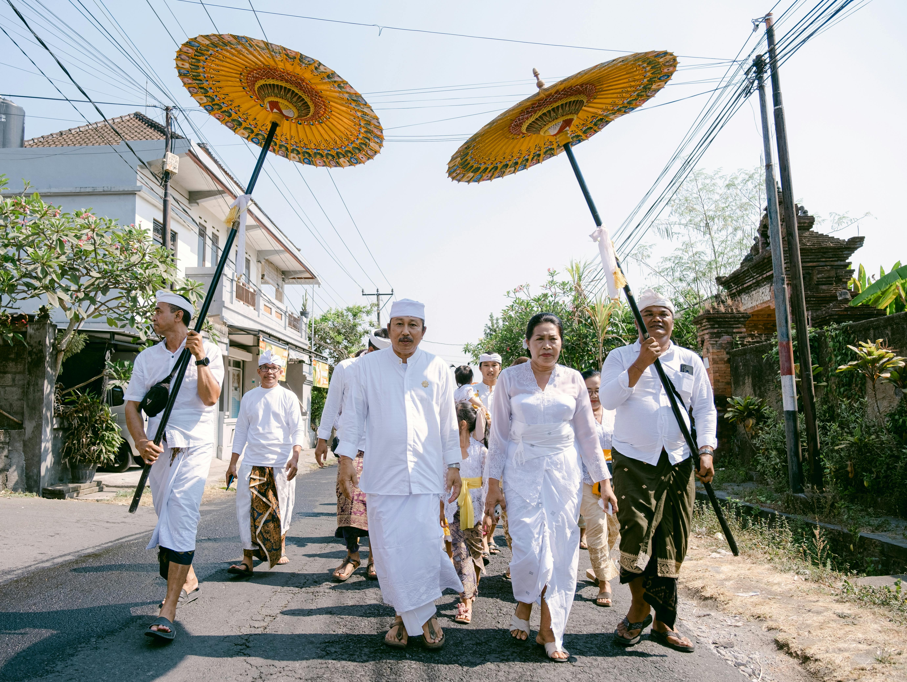

Arsitektur Tradisional Bali
Implementasi konsep keharmonisan Tri Hita Karana dalam struktur fisik tata ruang.
Strata Busana Adat Bali
Pembagian tingkatan pakaian berdasarkan peruntukan upacara adat dan keagamaan.

Utama / PernikahanPayas Agung
Tingkatan busana tertinggi dan termegah. Biasanya dikenakan oleh sepasang pengantin tradisional atau dalam ritual potong gigi (Mapandes). Kaya akan ornamen emas murni dan mahkota Gelungan yang menjulang tinggi.
- Gelungan Agung (Mahkota Emas)
- Kain Songket Prada Mewah
- Sabuk Serod (Selendang Menjuntai)

Madya / PersembahyanganPayas Madya
Busana standar harian yang dikenakan oleh masyarakat umum untuk melaksanakan ibadah sembahyang ke Pura ataupun menghadiri upacara adat rutin kemasyarakatan. Mengutamakan kesucian dan kesopanan.
- Udeng (Ikatan Kain Kepala Pria)
- Kebaya Adat & Kamen Kain Samping
- Selendang / Senteng Pengikat

Nista / SederhanaPayas Alit
Pakaian adat paling mendasar dan simpel. Pakaian ini umum digunakan saat melaksanakan kegiatan gotong-royong desa (Ngayah) atau saat mempersiapkan sarana sesajen upacara di pekarangan rumah.
- Baju Kemeja / Kaos Polos Bersih
- Kamen Lapisan Kerja Sederhana
- Senteng Ikat Pinggang Wajib